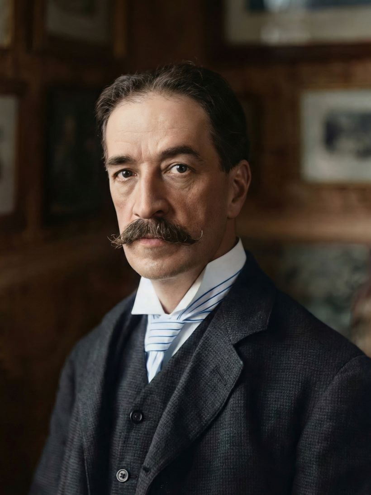

Louis Wain
A Waltz Through Catland
The Man Who Drew Cats
While his early work depicted standard Victorian cats, his later work is characterized by vibrant, psychedelic patterns, often cited as visual evidence of his deteriorating mental state—though this theory is debated by art historians today.

Selected Works